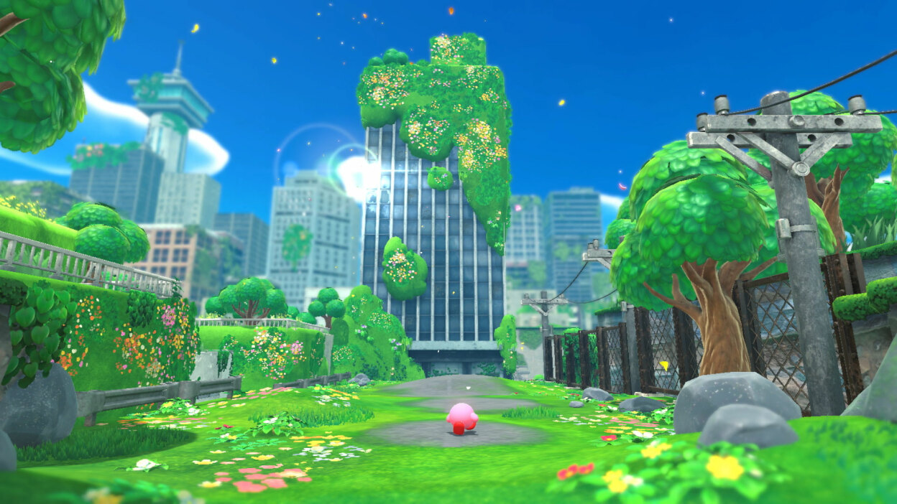
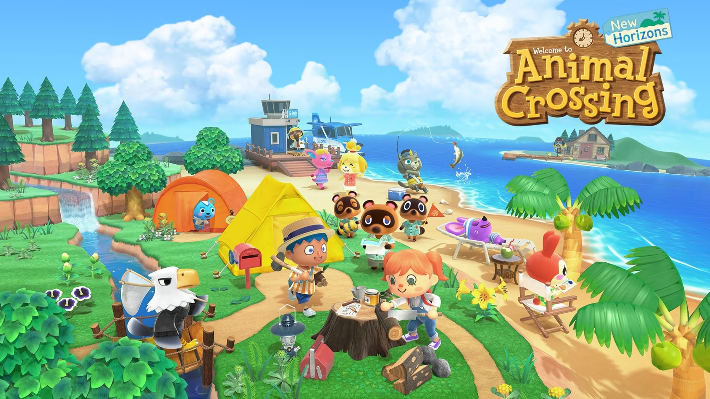
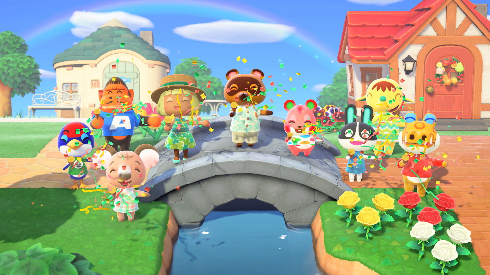
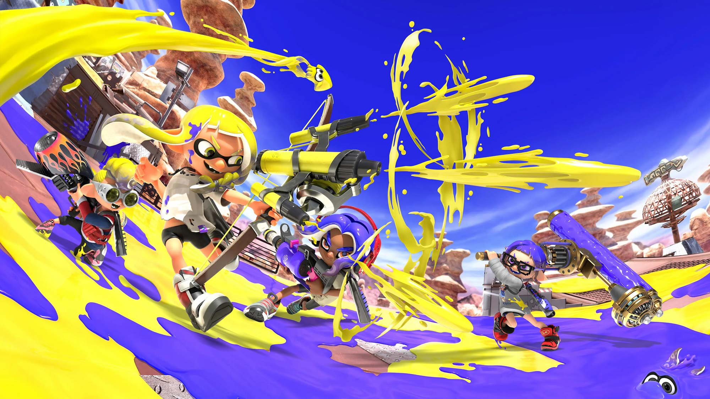
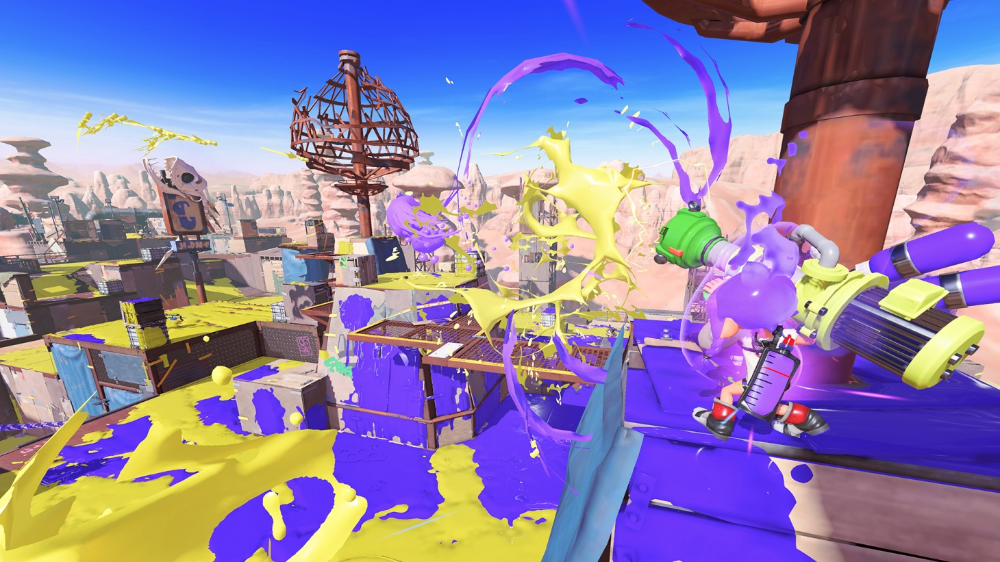
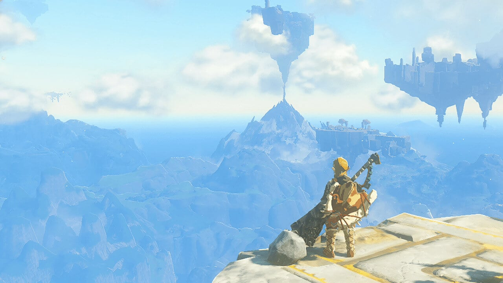

Float off on an all-new adventure as the powerful puffball, Kirby. Exp altlore 3D stages as you discover a mysterious world, save the kidnapped Waddle Dees, and defeat the ferocious Beast Pack. Hope you’re hungry for an unforgettable adventure!

Animal Crossing
Escape to Your Personal Island Paradise

Nook Inc. invites you to create your personal island paradise on a deserted island brimming with possibility.

Splatoon
Ink, swim, and splat in the freshest shooter around

Enter a sun-scorched desert inhabited by battle-hardened Inklings and Octolings. Ink, dive, swim, and splat your way to the top!

The new video about game update
The Legend of Zelda Tears of the Kingdom
Explore the vast land—and skies—of Hyrule
In this sequel to the Legend of Zelda: Breath of the Wild game, you’ll decide your own path through the sprawling landscapes of Hyrule and the mysterious islands floating in the vast skies above.

The game trailer
Super Smash Bros
New characters and stages join the entire legacy roster!
Gaming icons clash in the ultimate brawl you can play anytime, anywhere! Smash rivals off the stage as new characters Isabelle, Simon Belmont and King K. Rool join Inkling, Ridley, and every fighter in Super Smash Bros. history. Enjoy enhanced speed and combat at new stages based on the Castlevania series, Super Mario Odyssey, and more!